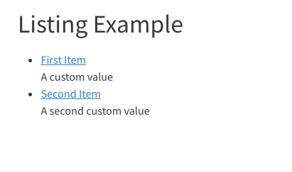

Custom Listings
Overview
In addition to the 3 built in types of listings, you can also build a completely custom display of the items. This custom display can generate any HTML and can optionally still take advantage of the sorting, filtering, and pagination provided by listings.
Listing Templates
To build a custom listing display, you create an EJS template that will be used to generate the HTML for a set of items that are passed to the template. EJS templates allow to generate HTML using plain javascript, making it easy to loop through items and output their values in your custom HTML.
To use a custom template, pass it in the template option for a listing:
listing:
template: gallery.ejsWhen a listing with a custom template is rendered, the listing contents will be read and processed into a set of items that are passed to the template for rendering. For example, in this case, all the documents in the posts directory will be read into items and passed to the gallery.ejs template.
listing:
contents: posts
template: gallery.ejsA simple template for outputing a list of documents might look like:
```{=html}
<ul>
<% for (const item of items) { %>
<li><a href="<%- item.path %>"><%= item.title %></a></li>
<% } %>
</ul>
```which produces simple HTML output like:
When rendered, the above template will receive an array of listing items called items. When the contents of a listing are loaded from a list a documents, each of those items will be populated with the fields described in Listing Item Fields. In addition, any other fields included in a documents metadata will be passed as a property of the item, making it possible to use custom metadata in your documents and the listing display.
Metadata Listings
The contents option for a listing most commonly contains a list of paths or globs, but it can also contain metadata. When contents are metadata, the metadata will be read into items and passed to the template. For example:
listing:
template: custom.ejs
contents:
- name: First Item
href: https://www.quarto.org
custom-field: A custom value
- name: Second Item
href: https://www.rstudio.org
custom-field: A second custom valuecould be rendered using:
```{=html}
<ul>
<% for (const item of items) { %>
<li>
<a href="<%- item.href %>"><%= item.name %></a><br/>
<%= item['custom-field'] %>
</li>
<% } %>
</ul>
```which produces a simple HTML display like:

Metadata File Listings
The contents option for a listing can also point to one or more yaml files (which contain metadata). In that case, the metadata will be read from the files into items and passed to the template. For example:
listing:
template: custom.ejs
contents:
- items.ymlwhere the contents of items.yml is:
- name: First Item
href: https://www.quarto.org
custom-field: A custom value
- name: Second Item
href: https://www.rstudio.org
custom-field: A second custom valueTemplate Examples
Portions of this website are built using custom listings. The best place to start is with our gallery, which is a listing built using a custom template and a metadata file. You can view the source code used to create the gallery page in our Github repository.
| File | Description |
|---|---|
| gallery.yml | The metadata that controls what items are displayed in the gallery listing. |
| gallery.ejs | The template used to display the items on the page. |
| index.qmd | The Quarto document that configures and positions the listing in the #gallery div. |
Sorting, Filtering, and Pagination
By default, sorting, filtering, and pagination are disabled for custom listings templates, but with some simple changes to your template and listing options, you can add this capability to your custom listing. To do this, you need to include the following three things in your custom template:
Include a
listclass on the HTML tag that contains the list of items.For each item, include
<%= metadataAttrs(item) %>in the HTML tag that contains the item. This will allow Quarto write custom attributes that are used for sorting and filtering.Within each item, include a class that identifies the tag whose text represents the contents of an item’s field. The class must be the name of the field prefixed with
listing-, for example the tag whose inner text is theitem.nameshould include a classlisting-name.
For example, we can modify the above custom.ejs template as follows:
```{=html}
<ul class="list">
<% for (const item of items) { %>
<li <%= metadataAttrs(item) %>>
<a href="<%- item.href %>" class="listing-name"><%= item.name %></a><br/>
<span class="listing-custom-field"><%= item['custom-field'] %><span>
</li>
<% } %>
</ul>
```Once you have included these items in your template, can you then enable the options in your listing:
listing:
sort-ui: true
filter-ui: true
page-size: 10The UI elements will now appear on the page and should interact properly with your custom listing.
Field Display Names
You may want to provide a custom display name for your field to provide a better name than the field name. For example, the field name would appear in the sort UI. You can use field-display-names to create mapping from a field to a display name. For example:
listing:
template: custom.ejs
contents:
- items.yml
sort-ui: true
filter-ui: true
page-size: 10
field-display-names:
name: "Name"
custom-field: "Custom"Date Sorting and Formatting
To properly format and sort date values, you can specify type information for fields in your items. If you specify a field is a date, it will automatically be formatted using the specified date formatting (either default or specified using date-format) and will support date sorting in ascending or descending order. If you specific a field as a number, it will support ascending and descending numeric sorting.
You and specify field types as follows
listing:
template: custom.ejs
contents:
- items.yml
field-types:
custom-date: date
custom-number: numberRequired Fields
Since listings are generated using fields that are specified in other documents or via metadata, it can be helpful to ensure that required fields are present. You can note required fields as following:
listing:
template: custom.ejs
contents:
- items.yml
field-required: [name, custom-field]If the listing page is rendered an any of contents are missing a value for either of the required fields, an error will be thrown noting the field that is required and the file or metadata that has omitted it.